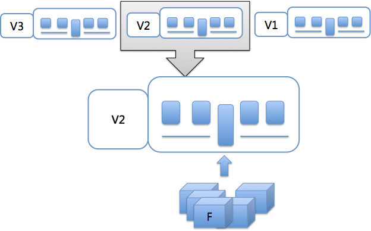
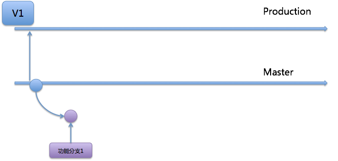
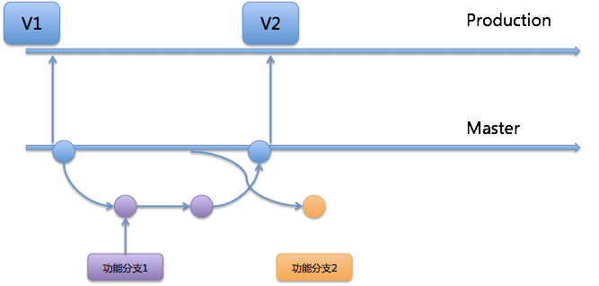
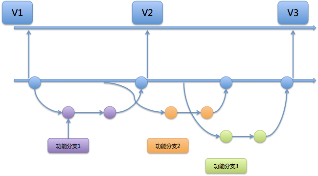
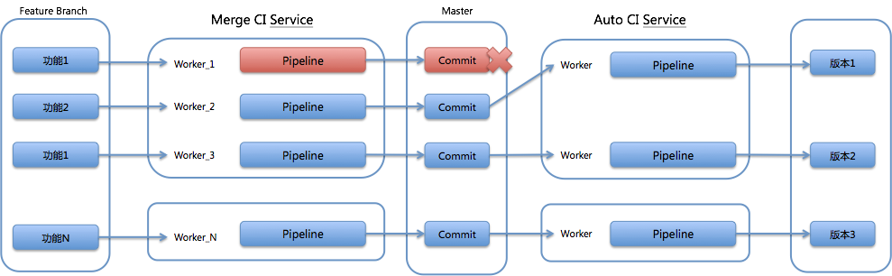

- 00 开篇词 量身定制你的持续交付体系.md.html
- 01 持续交付到底有什么价值？.md.html
- 02 影响持续交付的因素有哪些？.md.html
- 03 持续交付和DevOps是一对好基友.md.html
- 04 一切的源头，代码分支策略的选择.md.html
- 05 手把手教你依赖管理.md.html
- 06 代码回滚，你真的理解吗？.md.html
- 07 “两个披萨”团队的代码管理实际案例.md.html
- 08 测试环境要多少？从现实需求说起.md.html
- 09 测试环境要多少？从成本与效率说起.md.html
- 10 让环境自己说话，论环境自描述的重要性.md.html
- 11 “配置”是把双刃剑，带你了解各种配置方法.md.html
- 12 极限挑战，如何做到分钟级搭建环境？.md.html
- 13 容器技术真的是环境管理的救星吗？.md.html
- 14 如何做到构建的提速，再提速！.md.html
- 15 构建检测，无规矩不成方圆.md.html
- 16 构建资源的弹性伸缩.md.html
- 17 容器镜像构建的那些事儿.md.html
- 18 如何做好容器镜像的个性化及合规检查？.md.html
- 19 发布是持续交付的最后一公里.md.html
- 20 Immutable！任何变更都需要发布.md.html
- 21 发布系统一定要注意用户体验.md.html
- 22 发布系统的核心架构和功能设计.md.html
- 23 业务及系统架构对发布的影响.md.html
- 24 如何利用监控保障发布质量？.md.html
- 25 代码静态检查实践.md.html
- 26 越来越重要的破坏性测试.md.html
- 27 利用Mock与回放技术助力自动化回归.md.html
- 28 持续交付为什么要平台化设计？.md.html
- 29 计算资源也是交付的内容.md.html
- 30 持续交付中有哪些宝贵数据？.md.html
- 31 了解移动App的持续交付生命周期.md.html
- 32 细谈移动APP的交付流水线（pipeline）.md.html
- 33 进阶，如何进一步提升移动APP的交付效率？.md.html
- 34 快速构建持续交付系统（一）：需求分析.md.html
- 35 快速构建持续交付系统（二）：GitLab 解决代码管理问题.md.html
- 36 快速构建持续交付系统（三）：Jenkins 解决集成打包问题.md.html
- 37 快速构建持续交付系统（四）：Ansible 解决自动部署问题.md.html
- 持续交付专栏特别放送 答疑解惑.md.html
- 持续交付专栏特别放送 高效学习指南.md.html
- 结束语 越痛苦的事，越要经常做.md.html
- 捐赠
32 细谈移动APP的交付流水线（pipeline）
你好，我是王潇俊。今天我和你分享的主题是：细谈移动APP的交付流水线（pipeline）。
在上一篇文章《了解移动App的持续交付生命周期》中，我和你分享了移动App的整个交付生命周期，并把移动客户端的交付与后端服务的交付方式进行了对比。从中，我们发现移动App自身的特点，使得其持续交付流程与后端服务存在一定的差异。
所以，今天我会在上一篇文章的基础上，和你分享移动App持续交付中的个性化内容。这些个性化的内容，主要表现在流水线的三个重要环节上：
采用与发布快车（Release Train）模式匹配的代码分支管理策略；
支持多项目、多组件并行的全新构建通道；
自动化发布，完全托管的打包、发布、分发流程。
接下来，我就从这三个角度，和你详细聊聊移动App的持续交付吧。
发布快车模式
首先，我先和你说说什么是发布快车。
顾名思义，发布快车，就像一列由多节车厢组成的火车，每一节车厢代表一个发布版本，整个火车以一节节车厢或者说一个个版本的节奏，定期向前发车。而工程师们，则会把自己开发完成的功能集成到一节节的车厢上，这样集成在一节车厢的功能代码，就形成了一个新的版本。
如图1所示，就很好地展示了发布快车的含义。

图1 发布快车详解图
从这张图上，我们可以看到，每个版本（也就是每节车厢）都由多个功能组成。
关于发布快车还有三个关键点，容易被误解或者疏忽。
第一个关键点是，并不是说所有开发的功能，都一定要集成到最近的那节车厢、最近的那个版本中。任何功能都应该按照既定计划，规划纳入到适合的那节车厢、那个版本中。这也是为什么移动端App的持续交付需要良好的信息管理的原因。
第二个关键点是，我们必须要保证固定间隔的发车时间，每周、每两周都可以，但必须保证每个车厢到点即发。只有这样，我们才能保证持续交付流水线的持续运行，以及不间断地产出。这里需要注意的是，对于一些特殊的、不规则的发布，我们要把它们归类到热修复的流程，而不是在发布快车中处理。
第三个关键点是，这个过程的最终产物是可以发布到市场的版本，而不是发布到用户侧的版本。虽然我们把这个发布模式叫作发布快车，但其实它的最终产物是可以发布的待发布版本。所以这个流程完成后的版本没有被正式发布，或出现了部分缺陷无法发布的情况是很正常的，可以被接受。我们并不需要保证每个版本都一定能发布到用户手上。
发布快车的发布模式，特别是以上说的三个特性，非常符合移动App对持续交付的需求，即：分散开发，定期集成，控制发布。所以绝大部分的移动App团队，都选择采用发布快车的发布方式。
那么，如何才能实现这个发布快车模式的真实落地呢？
选择与发布快车模式匹配的代码分支策略；
改造出与发布快车模式匹配的构建通道；
实现发布流程的全自动化。
选择与发布快车模式匹配的代码分支策略
首先，选择一套与之匹配的代码分支管理策略，否则整个发布快车的实施会非常别扭。我们先一起回顾一下专栏的第4篇文章《一切的源头，代码分支策略的选择》。
我在这篇文章中介绍的代码分支策略中，Gitlab Flow与 发布快车模式的思想看上去非常接近。那我们不妨推演一下，这个分支策略是否符合我们的需要。
首先，项目仓库的初始状态如图2所示。这里有一个版本V1，代码仓库中有2个分支：Master，是集成分支；Production，是发布分支。

图2 项目仓库的初始状态
然后，以V1的commit为基准，建立功能分支1，并进行开发，如图3所示。

图3 引入功能分支1
如图4所示，功能分支1开发完成后，合并入Master。测试通过之后形成版本V2，V2就可以作为待发布的产物了。另外，在形成V2之前，我们可以看到，另外一个功能分支2也被建立了，但这个功能分支并没有被合并到Master，所以不会出现在版本V2中。

图4 形成版本2，并引入功能分支2
从图5中，我们可以看到，V2版本后，又出现了一个新的功能分支3，它与功能分支2并行开发。这两个功能分支合并入Master之后，被同时附加到版本V3中。

图5 引入功能分支3，并形成版本3
正如以上的几个步骤，如果每个版本都是定时进行构建和打包，那么这样的代码分支管理模型就是一个典型的符合发布快车的物理实现了。
全新的构建通道
当然，为了发布快车模式的落地，我们只是建立与之配套的代码分支管理策略还远远不够，还需要有配套的构建通道。
你可能会问，发布快车模式的落地，为什么还要选择特定的构建通道呢？
我先和你说说发布快车，以及与之配套的代码分支策略的弱点都有哪些吧。
如果功能分支合入Master分支的过程缺乏校验，以及必要的构建检查的话，那么Production分支在进行自动定期构建时，就很容易产生问题，而一旦产生问题，就会错过这个要定期发布的版本。
如果这只会影响到一个或少数几个功能的话，还好；但设想一下，如果你要发布一个大版本，由于某个小功能而影响了所有的其他功能，是不是就得不偿失了呢？
所以，为了高效的持续交付，我们就必须对构建通道进行一定的改造。

图6 被改造后的构建通道
如图6所示，我们会在功能分支合并入Master分支前，增加一次构建（Merge CI Service），这次构建的作用是保证功能分支的集成是成功的，否则不允许合并；同时，对于一个代码仓库来说，增加的这次构建过程要保证是串行的，即如果这个仓库正有一个合并构建在进行，则后续的合并构建需要等待。
这个合并构建过程，保证了Master分支上的任何commit随时都可以成功构建。之后再根据发布快车的要求定期启动版本构建（Auto CI Service），就能顺利地得到可测试版本了。
构建测试版本之后，流水线还可以继续处理，在production分支上打上对应的tag。
自动化的发布
构建通道建立之后，就是发布了。我在上一篇文章中提到，移动App的发布与后端服务有所区别。移动App的发布，需要特别注意这两点需求：
通常在发布到市场之前，会先发布内部，进行针对新功能的内测；
通常，为了节省调试信息带来的额外开销，内部发布会采用debug包，而正式发布则采用release包。
但是，从另一方面看，相比于后端服务的发布，移动App的发布步骤固定，且逻辑相对简单。
- iOS系统的发布步骤为：构建，导出ipa包，记录符号表，备份，上传至iTC；
- Android系统的发布步骤为：构建打包，更新渠道标识，签名，保存mapping文件，备份，上传至发布点。
理解了iOS和Android系统各自的发布步骤，我们就可以很容易地做到发布自动化了。
比如，针对iOS的版本发布来说，在构建和打包之后，我们可以获取到对应的ipa包，关联对应的版本信息元数据后，就可以上传到内部的发布站点，供QA下载测试了；或者上传到Apple TestFlight进行公测；当然也可以部署到App Store了。
接下来，我就和你详细说说如何做到发布的自动化。
你可以使用Fastlane等类似的工具完成整个发布过程，还可以根据不同发布的渠道定义各自的lane。当然Fastlane也可以提供打包等一系列Action，帮助你完成自动化。
lane :release do #发布到AppStore
increment_build_number #自增版本号的方法
cocoapods #更新pod
gym #打包
deliver(force: true) #发布到AppStore
end
这是一段最简单的Fastfile脚本。它的功能是：利用Fastlane提供的Action完成了打包，并发布到AppStore。另外，你还可以在Appfile（Fastlane用来描述App基本信息的专用描述文件）中定义关于App的信息。
当然，你还可以按照发布流程的需求定义自己的lane和Action，完成不同的操作。
private_lane :build do |options|
project = options[:project] #获取项目对象
build_number = project.build_number #获取项目定义的版本号
gym(
workspace: project.workspace, #编译工作空间
configuration: project.config, #编译配置
include_symbols: true, #是否包含符号
scheme: project.scheme, #编译计划
xcargs: "BUILD_NUMBER=#{build_number}", #版本号
build_path: project.package_path, #编译路径
output_directory: project.package_path, #ipa包输出地址
output_name: project.ipa_name, #ipa包的名字
silent: false) # 编译Action
end
这段代码展示的就是，用gym action构建一个自定义的、带参数的完整的构建过程了。我们可以看到，这里的参数是具体的一个project对象。当然，这里还有一个叫作output_directory的参数，你可以利用这个参数把构建的ipa包放到内部的下载地址。
这样看，移动App的自动化发布是不是很简单？https://github.com/fastlane/examples这里还有更多相关的例子，你可以参考它们完成更加复杂的自动化发布。
总结
今天，我和你一起分享了移动客户端持续交付流水线的几个详细点：
利用发布快车的发布模式，可以有效地管理客户端的版本，保证研发工作按节奏持续向前进展；
采用带发布分支的GitLab Flow配合发布快车的模型，可以使其做到物理落地；
发布快车本身也有一些弊端，比如对Master分支的合并，检查不够严格的话，会拖累项目进度，因此我们采用改造构建通道的方式，避免了这个问题的产生；
移动App的发布，有其独特的流程，通常是先内测，后正式发布；但其流程相对固定，且容易自动化。所以，我的建议是，实现发布的完全自动化，以提高研发效率。
另外，我还介绍了Fastlane这样一个工具，能够帮助你快速完成自动化的实现。
当然，我今天所分享的只是移App持续交付流水线的一种方式。在工程实践中，不同的产品和组织，往往会存在不同的流水线。
所以，关于移动App的流水线，并没有对错、优劣之分，合适的才是最好的。
思考题
你所在的团队，移动App的持续交付流水线，有哪些点与我今天分享的内容有所不同？你可以分析出是什么原因导致了这些不同吗，又是否可以进行优化呢？
感谢你的收听，欢迎你给我留言。
© 2019 - 2023 Liangliang Lee. Powered by gin and hexo-theme-book.